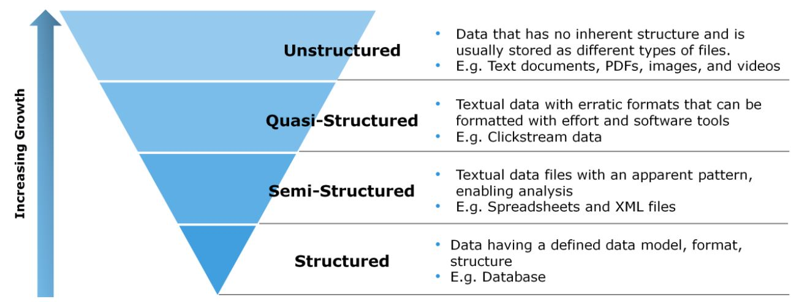

Following are the types of Big Data:
| Type | Link |
|---|---|
| Structured | Structured |
| Unstructured | Unstructured |
| Semi-structured | Semi-structured |
Semi-structured data can contain both the forms of data. We can see semi-structured data as a structured in form but it is actually not defined with e.g. a table definition in relational DBMS. Example of semi-structured data is a data represented in an XML file.
Examples Of Semi-structured Data
Looking at these figures one can easily understand why the name Big Data is given and imagine the challenges involved in its storage and processing.
Personal data stored in an XML file-
